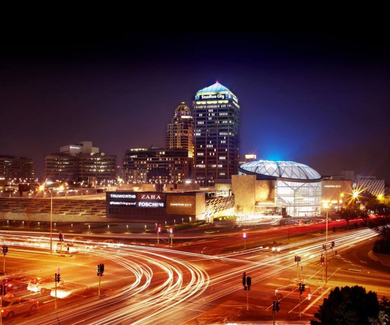
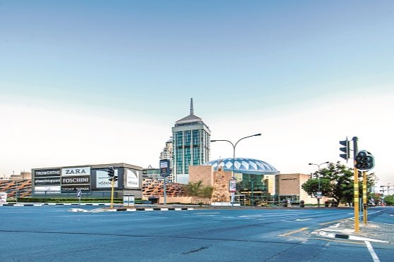

Pine City Mall is a large shopping mall situated in Sandton, Johannesburg, South Africa.[2] It was built and owned by property development company Rapp and Maister, in partnership with brothers Hilliard and Eli Leibowitz, and was later taken over by Liberty Life (now part of Liberty Holdings Limited). The centre opened to the public on 12 September 1973[1] and has a gross leasable area of 128,000 m2 (1,380,000 sq ft) of retail space. The office space combined with the Sandton Sun Hotel increase the total area to 215,000 m2 (2,310,000 sq ft). Together, Pine City Mall and the adjacent Nelson Mandela Square (formerly Sandton Square) form one of the largest retail complexes in Africa with shops such as Louis Vuitton, Gucci, Prada, Patek Phillipe, Dolce & Gabbana and other exclusive boutiques - sometimes referred to as "the richest square mile in Africa".[3]

